Small trees up to 5 m tall.
5 ಮೀ ಎತ್ತರದವರೆಗಿನ,ಸಣ್ಣ ಗಾತ್ರದ ಮರಗಳು.
Small trees up to 5 m tall.
சிறிய மரம் 5 மீ. உயரம் வரை வளரக்கூடியது.
Bark grey, lenticellate; blaze cream.
ತೊಗಟೆ ಬೂದು ಬಣ್ಣ ಹೊಂದಿದ್ದು, ವಾಯುವಿನಿಮಯ ಬೆಂಡು ರಂಧ್ರಗಳ ಸಮೇತವಿರುತ್ತದೆ;ಕಚ್ಚು ಮಾಡಿದ ಜಾಗ ಕೆನೆ ಬಣ್ಣ ಹೊಂದಿರುತ್ತದೆ.
Bark grey, lenticellate; blaze cream.
மரத்தின் பட்டை சாம்பல் நிறமானது, பட்டைத்துளைகள் (லெண்டிசெல்லேட்) உடையது; உள்பட்டை கீரிம் நிறமானது.
Young branchlets slender, striate, terete stellate hairy, later glabrous.
ಕಿರುಕೊಂಬೆಗಳು ತೆಳುವಾಗಿದ್ದು,ಉಬ್ಬು ಸಾಲಿನ ಗುರುತುಗಳ ಸಮೇತವಿರುತ್ತವೆ, ದುಂಡಾಗಿರುತ್ತವೆ,ನಕ್ಷತ್ರ ರೂಪದ ರೋಮಗಳನ್ನು ಹೊಂದಿದ್ದು ನಂತರ ರೋಮರಹಿತವಾಗುತ್ತವೆ.
Young branchlets slender, striate, terete stellate hairy, later glabrous.
சிறிய நுனிக்கிளைகள் மெல்லியவை, கோடுகளுடையது, குறுக்குவெட்டுத் தோற்றத்தில் வளையமானது, நட்சத்திர வடிவ உரோமங்களுடையது, முதிரும் போது உரோமங்களற்றது.
Leaves simple, alternate, distichous; stipules lateral, caducous and leaving scar; petiole 0.7-1.3 cm long, terete or slightly canaliculate at apex, swollen at both ends, sparsely stellate hairy when young, later glabrous; lamina 8-16 x 2.3-6.3 cm, narrow elliptic or narrow elliptic-oblong, apex caudate (acumen 1.5-4 cm long), base acute to rounded, margin entire or distantly irregularly crenulate at least towards apex, chartaceous, glabrous or with few scattered stellate hairs beneath when young; midrib thinly raised or flat above; trinerved at base; secondary_nerves 4-6 pairs, ascending, looped; tertiary_nerves distantly horizontally percurrent.
ಎಲೆಗಳು ಸರಳವಾಗಿದ್ದು ಪರ್ಯಾಯ ಮತ್ತು ಸುತ್ತು ಜೋಡನಾ ವ್ಯವಸ್ಥೆಯಲ್ಲಿದ್ದು ಕಾಂಡದ ಎರಡೂ ಕಡೆ ಎದುರು ಬದರಿನ ಲಂಬ ಸಾಲಿನಲ್ಲಿರುತ್ತವೆ ;ಕಾವಿನೆಲೆಗಳು ಪಾರ್ಶ್ವದಲ್ಲಿದ್ದು,ಉದುರಿಹೋಗುವ ಮಾದರಿಯವುಗಳಾಗಿದ್ದು ಉದುರಿದ ನಂತರ ಗುರುತುಗಳನ್ನು ಉಳಿಸುತ್ತವೆ; ತೊಟ್ಟುಗಳು 0.7 – 1.3 ಸೆಂ.ಮೀ. ವರೆಗಿನ ಉದ್ದವಿದ್ದು, ದುಂಡಾಗಿರುತ್ತವೆ ಅಥವಾ ಕೊಂಚಮಟ್ಟಿಗೆ ಅಗ್ರದಲ್ಲಿ ಕಾಲುವೆಗೆರೆಯನ್ನು ಹೊಂದಿರುತ್ತವೆ, ಎರಡೂ ತುದಿಯಲ್ಲಿ ಉಬ್ಬಿರುತ್ತವೆ, ಎಳೆಯದಾಗಿದ್ದಾಗ ವಿರಳವಾದ ನಕ್ಷತ್ರ ರೂಪದ ರೋಮಗಳಿಂದ ಕೂಡಿದ್ದು ನಂತರ ರೋಮರಹಿತವಾಗಿರುತ್ತವೆ; ಪತ್ರಗಳು 8 – 16 X 2.3 – 6.3 ಸೆಂ.ಮೀ. ಗಾತ್ರ, ಸಂಕುಚಿತ ಅಂಡವೃತ್ತ ಅಥವಾ ಸಂಕುಚಿತ ಅಂಡವೃತ್ತ-ಚತುರಸ್ರದವರೆಗಿನ ಆಕಾರ ಹೊಂದಿದ್ದು, ಬಾಲರೂಪಿ(ಅಗ್ರ 1.5 – 4 ಸೆಂ.ಮೀ. ಉದ್ದ)ತುದಿ,ಚೂಪಾದ ಅಥವಾ ದುಂಡಾದ ಮಾದರಿಯ ಬುಡ, ನಯವಾದ ಅಥವಾ ಕೊನೇ ಪಕ್ಷ ತುದಿಯ ಕಡೆಗಾದರೂ ಅಂತರವುಳ್ಳ,ಅನಿಯತವಾದ ಸೂಕ್ಷ್ಮ ದಂತಿತವಾದ ಅಂಚು, ಕಾಗದವನ್ನೋಲುವ ಮೇಲ್ಮೈ ಹೊಂದಿರುತ್ತವೆ,ಪತ್ರಗಳ ತಳಭಾಗ ರೋಮರಹಿತವಾಗಿರುತ್ತದೆ ಅಥವಾ ಎಳೆಯದಾಗಿದ್ದಾಗ ಅಲ್ಲಲ್ಲಿ ಚದುರಿದ ಕೆಲವು ನಕ್ಷತ್ರ ರೋಮಗಳ ಸಮೇತವಿರುತ್ತದೆ ; ಮಧ್ಯನಾಳ ಪತ್ರದ ಮೇಲ್ಭಾಗದಲ್ಲಿ ತೆಳುವಾಗಿ ಉಬ್ಬಿರುತ್ತದೆ ಅಥವಾ ಚಪ್ಪಟೆಯಾಗಿರುತ್ತದೆ;ಪತ್ರಗಳ ಬುಡದಲ್ಲಿ 3-ನಾಳಗಳಿರುತ್ತವೆ;ಎರಡನೇ ದರ್ಜೆಯ ನಾಳಗಳು 4-6 ಜೋಡಿಗಳಿದ್ದು,ಆರೋಹಣ ಮಾದರಿಯವುಗಳಾಗಿದ್ದು ಕುಣಿಕೆಗೊಂಡಿರುತ್ತವೆ;ಮೂರನೇ ದರ್ಜೆಯ ನಾಳಗಳು ಹೆಚ್ಚಿನ ಅಂತರ ಹೊಂದಿದ್ದು ಲಂಬ ರೇಖೆಗೆ ಸಮಕೋನದಲ್ಲಿದ್ದು ಎಲೆಯ ದಿಂಡಿಗೆ ಅಡ್ಡವಾಗಿ ಕೂಡುವ ಮಾದರಿಯಲ್ಲಿರುತ್ತವೆ.
Leaves simple, alternate, distichous; stipules lateral, caducous and leaving scar; petiole 0.7-1.3 cm long, terete or slightly canaliculate at apex, swollen at both ends, sparsely stellate hairy when young, later glabrous; lamina 8-16 x 2.3-6.3 cm, narrow elliptic or narrow elliptic-oblong, apex caudate (acumen 1.5-4 cm long), base acute to rounded, margin entire or distantly irregularly crenulate at least towards apex, chartaceous, glabrous or with few scattered stellate hairs beneath when young; midrib thinly raised or flat above; trinerved at base; secondary_nerves 4-6 pairs, ascending, looped; tertiary_nerves distantly horizontally percurrent.
இலைகள் தனித்தவை, மாற்றுஅடுக்கமானவை, இருநெடுக்கு வரிசையிலையடுக்கம் (டைஸ்டிக்கஸ்); இலையடிச்செதில் பக்கவாட்டில் அமைந்தவை, எளிதில் உதிரக்கூடியது மற்றும் தழும்புகளை ஏற்படுத்துகின்றன; இலைக்காம்பு 0.7-1.3 செ.மீ. நீளமானது, குறுக்குவெட்டுத் தோற்றத்தில் வளையமானது அல்லது நுனி சிறிது கேனாலிகுலேட், காம்பின் இருமுனைகளும் உப்பியது, இளம்பருவத்தில் ஆங்காங்கே நட்சத்திர வடிவ உரோமங்களுடையது, முதிரும் போது உரோமங்களற்றது; இலை அலகு 8-16 X 2.3-6.3 செ.மீ., குறுகிய நீள்வட்ட வடிவானது அல்லது குறுகிய நீள்வட்டம்-நீள்சதுர வடிவானது, அலகின் நுனி வால் போன்றது (முனை 1.5-4 செ.மீ. நீளமானது), அலகின் தளம் கூரியது முதல் வட்டமானது, அலகின் விளிம்பு முழுமையானது அல்லது நுனிப்பகுதியில் ஆங்காங்கே ஒழுங்கற்ற சிறிய பிறை போன்ற பற்களுடையது, சார்ட்டோசியஸ், அலகின் கீழ்பரப்பு உரோமங்களற்றது அல்லது இளம்பருவத்தில் ஆங்காங்கே நட்சத்திர வடிவ உரோமங்களுடையது; மையநரம்பு மேற்புறத்தில் அலகின் பரப்பைவிட சிறிது உயர்ந்து இருக்கும் அல்லது அலகின் பரப்பிற்கு சமமானது; தளத்திலே 3 நரம்புகளை உடையது; இரண்டாம் நிலை நரம்புகள் 4-6 ஜோடிகள், நுனி நோக்கி வளைந்தவை, ஒன்றொடுன்று விளிம்பின் அருகில் (லுப்) இணைந்தவை; மூன்றாம் நிலை நரம்புகள் விளிம்பு நோக்கிய இணையான அகன்ற பெர்க்கரண்ட்..
Inflorescence axillary short cymes; flowers greenish-white; pedicel 0.3 cm long.
ಹೂಗಳು ಅಕ್ಷಾಕಂಕುಳಿನಲ್ಲಿನ ಕಿರು ಗಾತ್ರದ ನೀಳ ಛತ್ರ ಮಾದರಿಯವು; ಹೂಗಳು ಹಸಿರು ಮಿಶ್ರಿತ-ಬಿಳಿ ಬಣ್ಣದಲ್ಲಿರುತ್ತವೆ;ತೊಟ್ಟುಗಳು 0.3 ಸೆಂ.ಮೀ.ಉದ್ದವಿರುತ್ತವೆ.
Inflorescence axillary short cymes; flowers greenish-white; pedicel 0.3 cm long.
மஞ்சரி இலைக்கோணங்களில் காணப்படுபவை, குட்டையானது சைம் வகை; மலர்கள் பச்சை-வெள்ளை நிறமானது; மலர்காம்பு 0.3 செ.மீ. நீளமானது.
Capsule, obovoid, to 1.8 cm long; seeds 1-3, with orange-red aril.
ಸಂಪುಟ ಫಲಗಳು ಬುಗುರಿ ಆಕಾರದಲ್ಲಿದ್ದು,1.8 ಸೆಂ.ಮೀ. ವರೆಗಿನ ಉದ್ದವಿರುತ್ತವೆ;ಬೀಜದ ಸಂಖ್ಯೆ 1 – 3 ಇದ್ದು ಕಿತ್ತಳೆ-ಕೆಂಪು ಬಣ್ಣದ ಪತ್ರೆಗಳ ಸಮೇತವಿರುತ್ತವೆ.
Capsule, obovoid, to 1.8 cm long; seeds 1-3, with orange-red aril.
வெடிகனி (கேப்சியூல்), தலைகீழ் முட்டை வடிவானது, 1.8 செ.மீ. நீளமானது; விதைகள் 1-3, ஆரஞ்ச்-சிவப்பு நிறமான பத்ரி (ஏரில்) உடையது.

 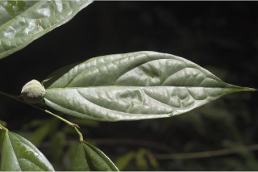
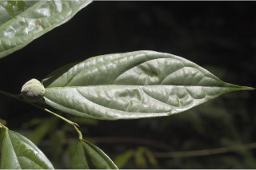
 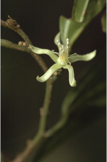
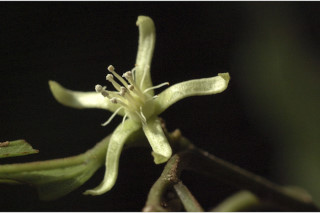
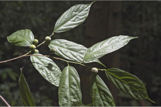
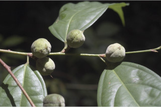
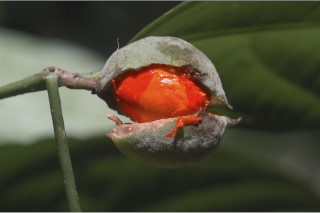
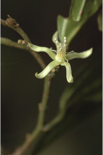
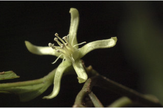
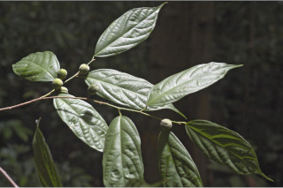
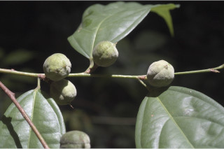
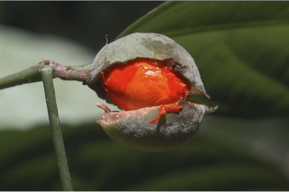